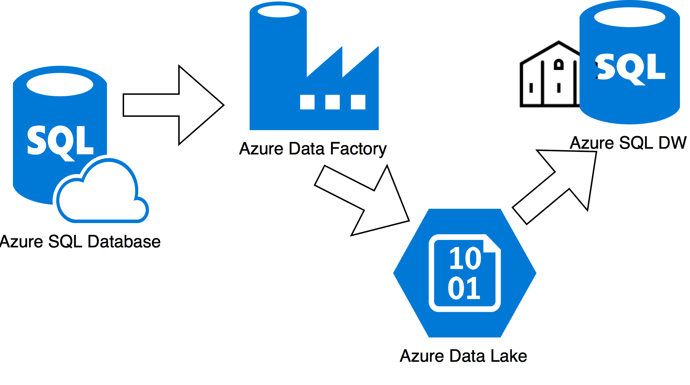
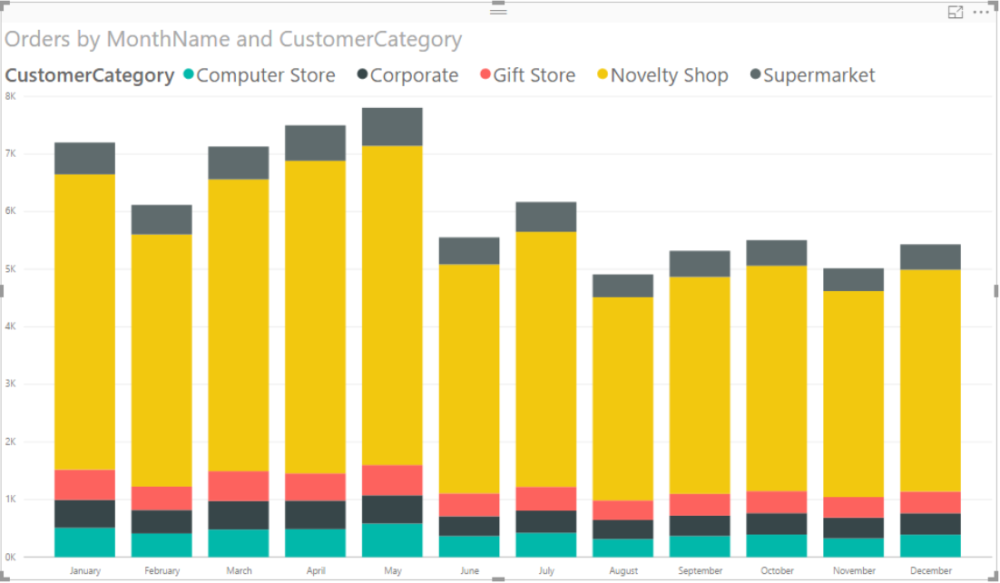
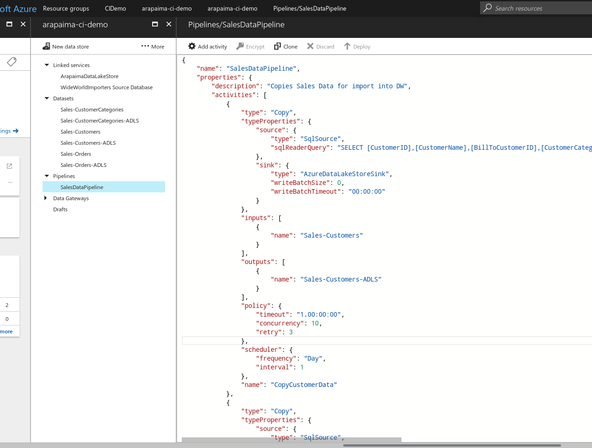
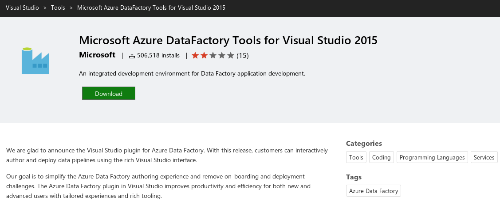
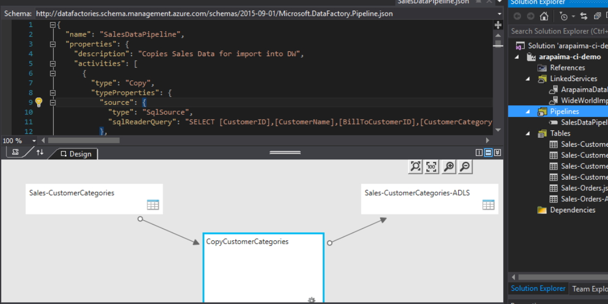
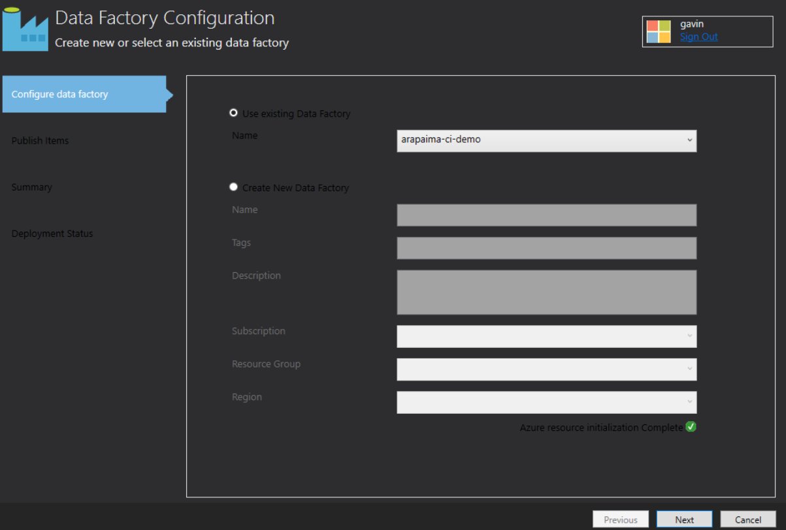
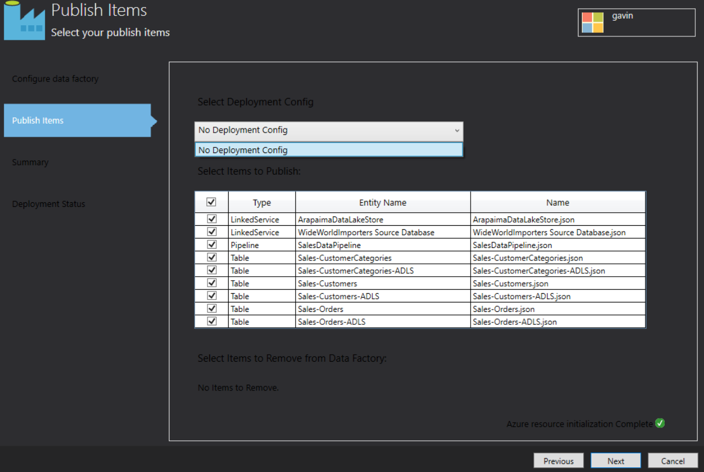
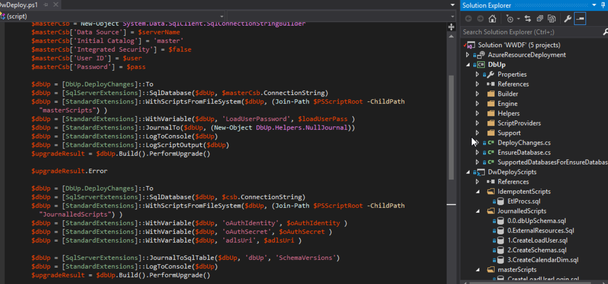

Modern Data
Continuous Delivery on the Microsoft Azure Data Platform
Gavin Campbell
gavin@arapaima.uk
Who is this guy anyway?
Don't normally talk about myself Used to be a developer, (Sourcesafe!)
The project
Proof of concept for Microsoft Azure
Consolidating on-prem reporting systems
With added Big Data
So, all of that is how some people I knew ended up asking me for help with this project.
The technology stack
Microsoft Azure Data Factory
Microsoft Azure Data Lake Store
Microsoft Azure SQL Data Warehouse
There's a theme here...
Azure Data Factory
"What is Azure Data Factory" ,Microsoft ,CC-BY 4.0
Hosted tool for orchestrating data flow and transformation
The Proof of Concept

Use ADF to extract from source into ADL.
The Minimum Viable Project

One measure, 1 Dimension (or maybe 2!)
Data Factory Development in the Azure Portal

Options for promoting code between environments
Copy and paste via notepad
Use Microsoft Word to create a deployment guide
But what about the credentials?
DevOps team can deploy the credentials! Conclusion: this approach doesn't scable beyond one environment.
Data Factory in Visual Studio

Only for VS2015
Data Factory in Visual Studio

Structure the same as in the Portal
Right-click → Publish to Azure → Devops!

The Data Factory has to exist or be created in this dialog.
Right-click → Publish to Azure → Devops!

Deployment configs let us specify items that change from env to envConways' Law
Campbell's Law
Organizations which sell developer tools (in the broad sense used here) are constrained to produce tools that reflect the
terrible working practices of the people to whom they market those tools.
BI systems were developed by a hobbit sitting in the corner
Azure Resource Manager Templates
Entire solution can be defined in JSON file(s):
Allows us to specify a resource group at deployment time
cf CloudFormation
Managing the Data Warehouse Schema
"Migration" tools aren't "smart"
MS and others have tools for database deployment.

From Nuget, but this is local! Other ways to use it.
The Build Definition
Summary
Use AzureRM to create Data Factories
Find a sensible way to manage the DW schema
Create a new environment per brancho
Use Release Management to deploy changes to "permanent" environments
 "What is Azure Data Factory",Microsoft,CC-BY 4.0
"What is Azure Data Factory",Microsoft,CC-BY 4.0